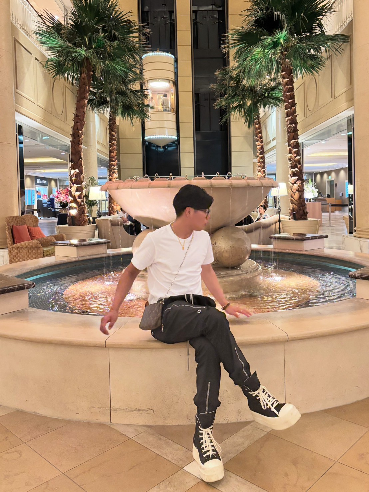

やりたいことが見つからない
Your next chapter starts here
やりたいことが
わからない。
そこからでいい。
その「わからない」を、一緒に見つけて形にします。
自分の可能性を整理し、起業・集客・事業構築を実践的に学ぶ20代向けコミュニティ。
まだ目標が決まっていなくても大丈夫。まずは今の悩みを整理するところから。
その「わからない」を、一緒に見つけて形にします。
自分の可能性を整理し、起業・集客・事業構築を実践的に学ぶ20代向けコミュニティ。
まだ目標が決まっていなくても大丈夫。まずは今の悩みを整理するところから。

変わりたい気持ちはある。でも、何をしたらいいかがわからない。
やりたいことが見つからない
自分の強みや向いていることがわからない
何か始めたいけど、何から動けばいいかわからない
今の働き方をこの先も続けていいのか不安
将来の選択肢をもっと増やしたい
考えていることを行動に移す方法を知りたい
最初から答えを
持っている必要はない。
考え、試し、行動しながら見つけていく。
自分を知ることから、実践的なスキルを学ぶことまで。少しずつ行動につなげます。
興味・価値観・得意なことを整理し、自分が大切にしたい方向性を考える。
起業・集客・営業・事業構築について、実例やワークを通して学ぶ。
考えたことを小さな行動に落とし込み、振り返りながら次の一歩を考える。
入会を決めてから相談する必要はありません。今の状況や悩みを聞かせてください。
友だち追加して、気になっていることをメッセージ。目標が決まっていなくても大丈夫です。
今感じていることや、これからどうなりたいかを一緒に整理します。
学べる内容やコミュニティが合うかを確認し、今後の選択肢を考えます。
将来と向き合い、実践を通じて選択肢を広げていくための学びの場です。
※実績を掲載する場合は、対象・期間・集計方法などを確認し、正確に説明できる表現を使用してください。
相談・受付無料。やりたいことが決まっていない段階からでも、お気軽にご相談ください。